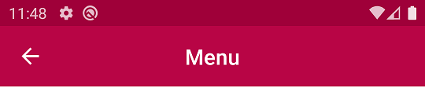
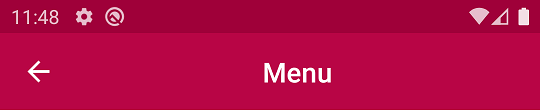
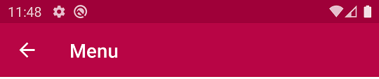
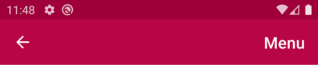

| Center Screen | Centers the title of the application bar according to the full width of the image. |
| Center Space | Centers the title of the application bar according to its free space. |
| Left | Aligns the title of the application bar to the left. |
| Platform Default | The default value for Android generator is Left. |
| Right | Aligns the title of the application bar to the right. |
Objects: Theme
Generators: Android
This property applies only at design-time.
| Center Screen |
|  |
| Center Space |
|  |
| Left |
|  |
Note: The generated application always saves space on the left for its back button. In order to fully fit the left space, the call stack must be empty, or you can disable the back button by programming the Back Event as empty. In this last case, the back function defined by the OS will also be disabled, so use it at your own risk.
| Right |
|  |
To apply the corresponding changes when the property value is configured, Build the Main Object.